Look what I can do
DOWN 

что я как будто бы уже сто триллионов миллиардов лет проживаю на триллионах и триллионах таких же планет, как эта Земля, мне этот мир абсолютно понятен, и я здесь ищу только одного - покоя, умиротворения и вот этой гармонии, от слияния с бесконечно вечным, от созерцания великого фрактального подобия и от вот этого замечательного всеединства существа, бесконечно вечного, куда ни посмотри, хоть вглубь - бесконечно малое, хоть ввысь - бесконечное большое, понимаешь? А ты мне опять со своим вот этим, иди суетись дальше, это твоё распределение, это твой путь и твой горизонт познания и ощущения твоей природы, он несоизмеримо мелок по сравнению с моим, понимаешь? Я как будто бы уже давно глубокий старец, бессмертный, ну или там уже почти бессмертный, который на этой планете от её самого зарождения, ещё когда только Солнце только-только сформировалось как звезда, и вот это газопылевое облако, вот, после взрыва, Солнца, когда оно вспыхнуло, как звезда, начало формировать вот эти коацерваты, планеты, понимаешь, я на этой Земле уже как будто почти пять миллиардов лет живу и знаю её вдоль и поперёк этот весь мир, а ты мне какие-то... мне не важно на твои тачки, на твои яхты, на твои квартиры, там, на твоё благо. Я был на этой планете бесконечным множеством, и круче Цезаря, и круче Гитлера, и круче всех великих, понимаешь, был, а где-то был конченым говном, ещё хуже, чем здесь. Я множество этих состояний чувствую. Где-то я был больше подобен растению, где-то я больше был подобен птице, там, червю, где-то был просто сгусток камня, это всё есть душа, понимаешь? Она имеет грани подобия совершенно многообразные, бесконечное множество. Но тебе этого не понять, поэтому ты езжай себе , мы в этом мире как бы живем разными ощущениями и разными стремлениями, соответственно, разное наше и место, разное и наше распределение. Тебе я желаю все самые крутые тачки чтоб были у тебя, и все самые лучше самки, если мало идей, обращайся ко мне, я тебе на каждую твою идею предложу сотню триллионов, как всё делать. Ну а я всё, я иду как глубокий старец,узревший вечное, прикоснувшийся к Божественному, сам стал богоподобен и устремлен в это бесконечное, и который в умиротворении, покое, гармонии, благодати, в этом сокровенном блаженстве пребывает, вовлеченный во всё и во вся, понимаешь, вот и всё, в этом наша разница. Так что я иду любоваться мирозданием, а ты идёшь преисполняться в ГРАНЯХ каких-то, вот и вся разница, понимаешь, ты не зришь это вечное бесконечное, оно тебе не нужно. Ну зато ты, так сказать, более активен, как вот этот дятел долбящий, или муравей, который очень активен в своей стезе, поэтому давай, наши пути здесь, конечно, имеют грани подобия, потому что всё едино, но я-то тебя прекрасно понимаю, а вот ты меня - вряд ли, потому что я как бы тебя в себе содержу, всю твою природу, она составляет одну маленькую там песчиночку, от того что есть во мне, вот и всё, поэтому давай, ступай, езжай, а я пошел наслаждаться прекрасным осенним закатом на берегу теплой южной реки. Всё, ступай, и я пойду.